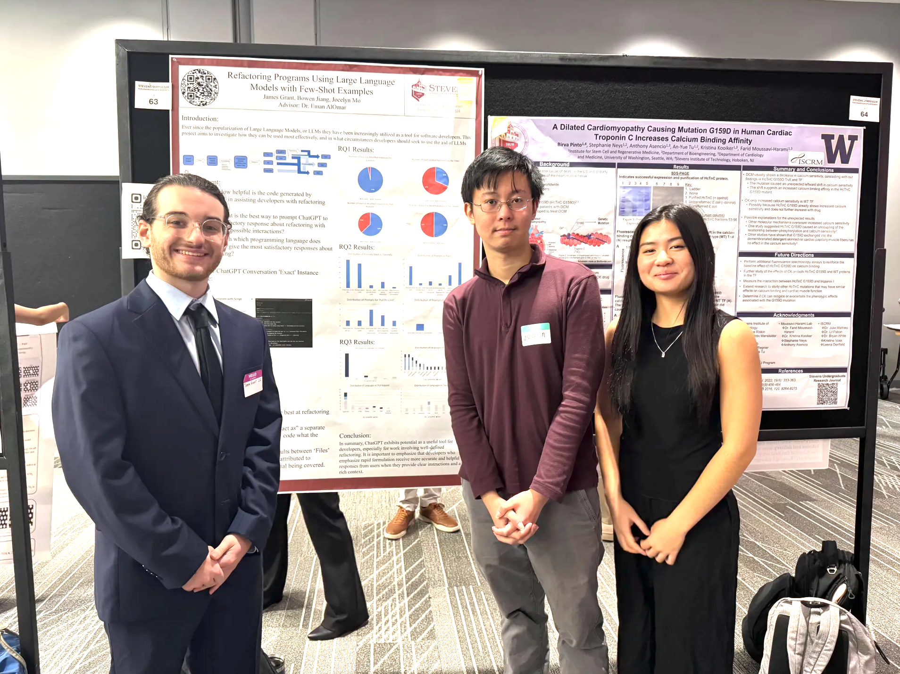
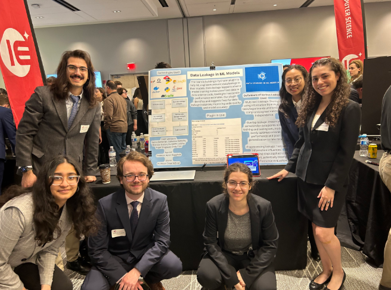
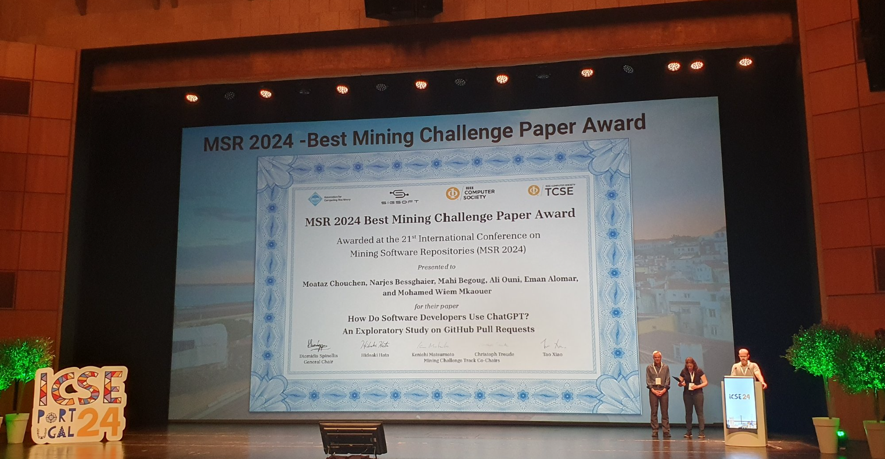
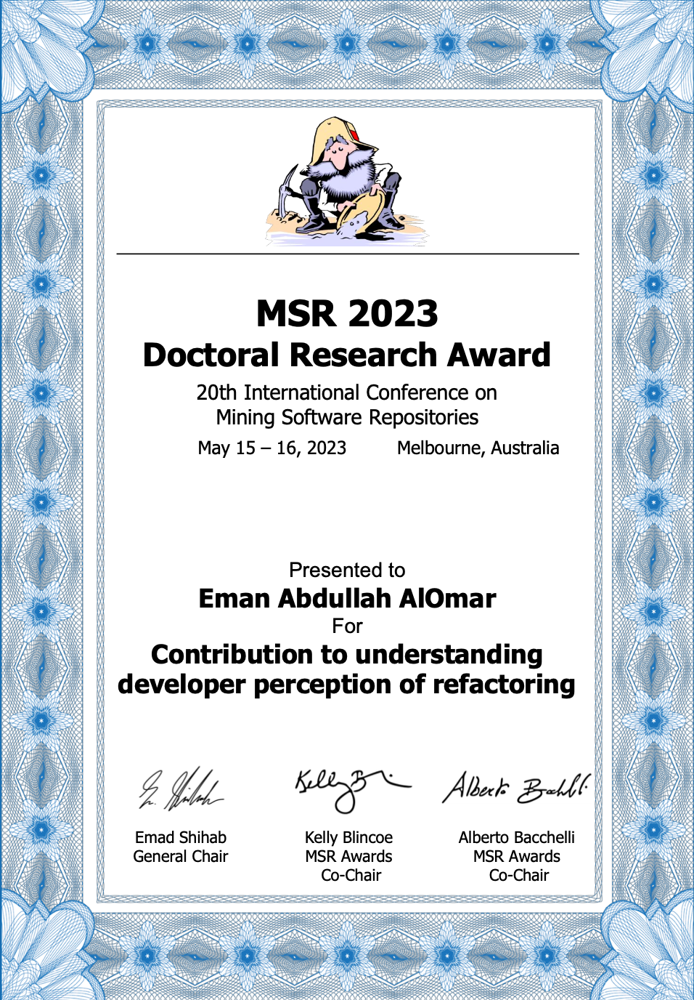
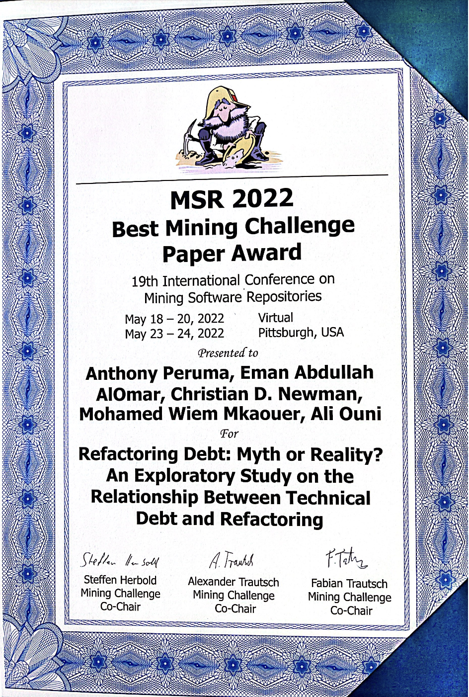
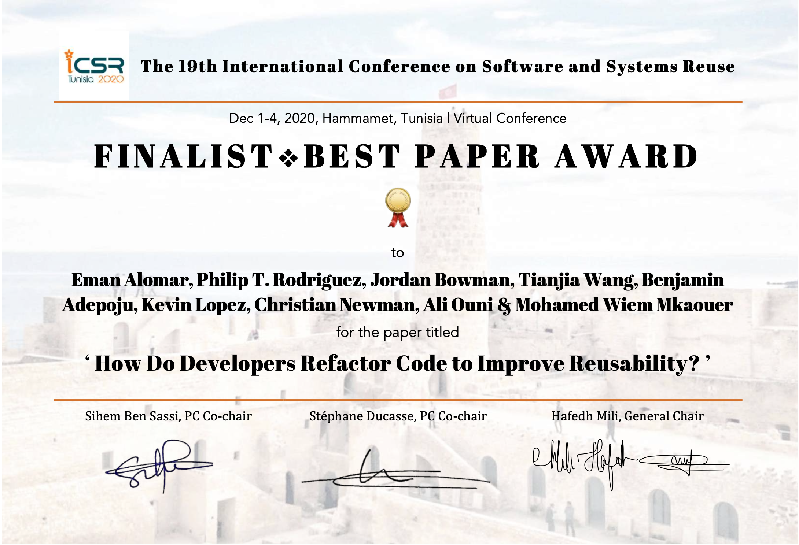

What's going on here at our Lab
-
Dr. AlOmar to serve as Open Science Co-chair at ESEM 2025
Dr. AlOmar has been served as the Open Science Co-chair for the Empirical Software Engineering and Measurement (ESEM) 2025 conference.
-
Pinnacle scholar students presented their research on ChatGPT
Pinnacle Scholar students (James Grant, Jocelyn Mo, Bowen Jiang) showcased their research on ChatGPT, exploring its applications, limitations, and impact on various domains. This event provided an excellent platform for students to engage in critical discussions and contribute to the growing body of research on large language models.

-
Senior Design team presented their Data Leakage tool at Stevens Expo 2024
The Senior Design team successfully presented their Data Leakage detection and correction tool at the Stevens Expo 2024. Their project showcased an approach to identifying and mitigating data leakage in machine learning pipelines, ensuring better model integrity.

-
Best Mining Challenge Paper Award at the International Conference on Mining Software Repositories MSR 2024
The team received the Best Mining Challenge Paper Award at the International Conference on Mining Software Repositories (MSR 2024). This award recognizes outstanding contributions to software repository mining, showcasing innovative methodologies and impactful findings. Paper entitled, "How Do Software Developers Use ChatGPT? An Exploratory Study on GitHub Pull Requests". Team: Moatez Chouchen, Narjes Bessghaier, Mahi Begoug, Mohamed Wiem Mkaouer and Ali Ouni.

-
Dr. AlOmar joined the editorial board of Systems and Software JSS 2023
Dr. AlOmar has joined the editorial board of the Journal of Systems and Software (JSS) in 2023. This role allows Dr. AlOmar to contribute to the advancement of software engineering research by overseeing high-quality publications, and reviewing cutting-edge studies
-
Top Reviewer Award at Journal of Systems and Software JSS 2023
Dr. AlOmar was among the Top Reviewers at the Journal of Systems and Software (JSS) 2023. This award recognizes contributions to the peer-review process, highlighting Dr. AlOmar's dedication to maintaining high academic standards and ensuring the quality of research published in the journal.
-
Dr. AlOmar received the Distinguished Doctoral Research Award from International Conference on Mining Software Repositories MSR 2023
Dr. AlOmar was honored with the Distinguished Doctoral Research Award at the International Conference on Mining Software Repositories (MSR 2023). This prestigious award recognizes exceptional doctoral research in the field of software repositories, underscoring Dr. AlOmar's significant contributions to advancing the understanding of software mining techniques and their impact on software engineering practices.

-
Dr. AlOmar received the Jess H. Davis Memorial Award for Research Excellence from the School of Systems and Enterprises at Stevens Institute of Technology
Dr. AlOmar was honored with the Jess H. Davis Memorial Award for Research Excellence by the School of Systems and Enterprises at Stevens Institute of Technology. This college-level award recognizes outstanding research contributions, impact, and dedication to advancing knowledge in the field. Dr. AlOmar's work continues to drive innovation and excellence in software engineering and machine learning research.
-
Best Paper Award at the Technical Symposium on Computer Science Education SIGCSE 2024
The team was honored with the Best Paper Award at the Technical Symposium on Computer Science Education (SIGCSE 2024). This prestigious recognition highlights their significant contributions to computer science education, particularly in innovative teaching methodologies and curriculum development. The award reflects the impact of their research on improving learning experiences and fostering better engagement in computing education. Paper entitled, "Automating source code refactoring in the classroom". Team: Mohamed Wiem Mkaouer and Ali Ouni
-
Three papers are accepted at MSR 2024
The team had three papers accepted at the International Conference on Mining Software Repositories (MSR 2024). The accepted papers include one full research paper and two mining challenge papers.
-
Dr. AlOmar served as Program Committee Co-chair at CSER 2023
Dr. AlOmar served as the Program Committee Co-chair at the Conference on Systems Engineering Research (CSER) 2023 conference.
-
Dr. AlOmar served as Program Committee Co-chair at IWoR 2022
Dr. AlOmar served as the Program Committee Co-chair at the International Workshop on Refactoring (IWoR) 2022.
-
Best Mining Challenge Paper Award at the International Conference on Mining Software Repositories MSR 2022
The team received the Best Mining Challenge Paper Award at the International Conference on Mining Software Repositories (MSR 2022). This award recognizes their outstanding research in mining software repositories, showcasing innovative approaches to understanding software evolution, quality, and developer practices. Paper entitled, "Refactoring Debt: Myth or Reality? An Exploratory Study on the Relationship Between Technical Debt and Refactoring". Team: Anthony Peruma, Mohamed Wiem Mkaouer, Christian Newman, and Ali Ouni.

-
Three papers are accepted at MSR 2022
The team had three papers accepted at the International Conference on Mining Software Repositories (MSR 2022). The accepted papers include one full research paper and two mining challenge papers.
-
Best Reviewer Award at Journal of Systems and Software JSS 2022
Dr. AlOmar received the Best Reviewer Award at the Journal of Systems and Software (JSS) 2022. This recognition honors Dr. AlOmar's contributions to the peer-review process.
-
Dr. AlOmar served as Publicity Co-chair at IWoR 2021
Dr. AlOmar served as the Publicity Co-chair at the International Workshop on Refactoring (IWoR 2021). In this role, Dr. AlOmar played a part in promoting the workshop, ensuring its visibility within the academic community.
-
Finalist Best Paper Award at the International Conference on Software Reuse ICSR 2020
Dr. AlOmar was named a Finalist for the Best Paper Award at the International Conference on Software Reuse (ICSR 2020). This recognition highlights the exceptional quality and impact of their research in the field of software reuse.

-
Best Paper Award at the International Workshop on Refactoring IWoR@ICSE 2019
Dr. AlOmar received the Best Paper Award at the International Workshop on Refactoring (IWoR) at ICSE 2019. This award recognized their outstanding research in the area of software refactoring, focusing on techniques and methodologies that better understand developer perception of refactoring. Paper entitled, "Can refactoring be self-affirmed? an exploratory study on how developers document their refactoring activities in commit messages". Team: Mohamed Wiem Mkaouer and Ali Ouni.